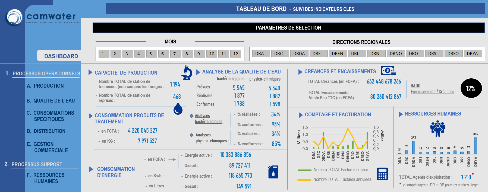

Details du Projet
Objectifs
Le Top Management d'une entreprise de traitement et de distribution d'eau d'un pays d'Afrique Centrale a souhaité avoir un état de reporting lui permettant d'avoir un certain nombre d'indicateurs clés définis. L'objectif étant d'avoir en temps réel une vue d'ensemble des activités et des processus métiers dans les 10 régions territoriales au sein desquelles l'entreprese opère.
Configuration
Au démarrage du projet, un nettoyage des données a été effectué afin de garantir la précision de l'analyse. Il s'agissait notamment de supprimer les doublons, les cellules fusionnées, les sauts de séquence,etc. Parallèlement, les données ont été mises à jour (en créant des nouvelles colonnes) pour avoir une logique dans leur interprétation.
Fig 1. Cette image montre une partie du jeu de données AVANT le nettoyage.
Fig 2. Cette image montre une partie du jeu de données APRES le nettoyage.
Ces étapes étaient essentielles pour s'assurer que les données soient correctement retraitées pour l'analyse et qu'elles produiraient des résultats précis. Nous avons commencé avec 195 enregistrements et nous en avons maintenant 28081.
Exploration des données
J'ai commencé tout d'abord par segmenter les données en fonction des processus, des sous-processus, des KPI, des unités de valeur, etc.
Dans un secod temps j'ai utilisé cette segmentation pour créer des tableaux croisés dynamiques regroupant plusieurs informations, créé des graphiques présentant diverses informations et enfin utilisé des fonctions pour effectuer des calculs.
Fig 3. Extrait des différents tableaux et graphiques croisés dynamiques créés pour l'analyse.
Afin de faciliter la visualisation de l'ensemble de ces informations plusieurs tableau de bord ont été créés présentant une vue condensée des graphiques et de différents indeicateurs clés. J'ai également ajouté des slicers aux tableaux de bord, permettant aux utilisateurs de filtrer les données en fonction de deux critères clés : Les agences régionales (DRDA, DRN, DRYA, etc.) et les différents mois (Janv., Fév., etc.) de l'année.
Fig 4. Tableau de bord présentant une vue panoramique des indicateurs clés pour un sous-processus métier spécifique.
Fig 5. Tableau de bord présentant une vue panoramique des indicateurs clés les plus importants.
Quelques Principaux constats
Le tableau de bord nous permet d'obtenir les informations suivantes :
- Capacité de Production : Tout au long de l'année 2020, il a été dénombré un total de 1 194 stations de traitement d'eau reparties sur les 10 régions, dans lesquelles opèrent l'entreprise.
- Produits de traitement : Un monat total de 4,2 Milliards engagés.
- Consommation d'énergie : 10,3 Milliards dépensés pour l'énergie active (électricité) équivalant à 118,6 Millions KwH.
- Gestion des Créances: 12% de taux de recouvrement.
- Comptage et facturation : Les agences DRDA, DRYA et DRO sont les trois premières qui émettent le plus de factures. Toutefois il est à noter que les agences DRNO, DRA et DRN font partie des dernières émettant le moins de factures mais à contrario procèdent en majeure partie de l'annulation de ces factures.
- Ressources Humaines : Les agences DRYA, DRDA et DRC emploient 60% de l'ensemble des agents d'exploitation.
En conclusion, ce tableau de bord et ces états de reporting fournissent des informations pertinentes au Top Management, qui pourrait mettre en œuvre des mesures concrètes afin d'optimiser les processus métiers de l'entreprise et ainsi mieux répondre aux besoins et aux intérêts du marché, qui pourrait se traduire d'un côté par une diminution des charges et une augmentation du chiffre d'affaires et l'autre côté une amélioration du résultat financier .